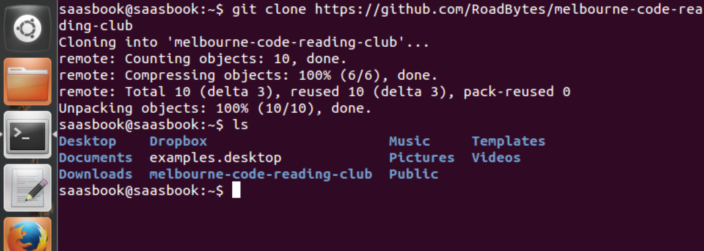
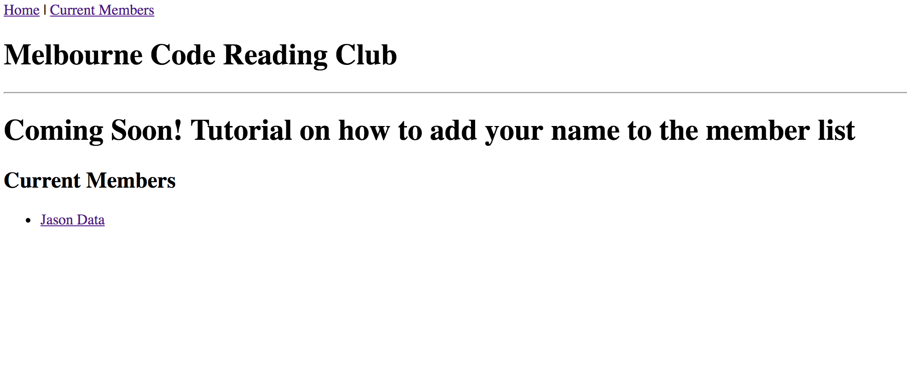

Simple Github PR Workflow
<28 Jan 2017>
One of the things a web developer needs to get comfortable with is working with GitHub. I’ve made a simple static site for ‘Melbourne Code Reading Club’ to practice how this works. The cool thing is, when changes in the repository are merged, the actual site will record the changes.
-
here is a link to the site https://roadbytes.github.io/melbourne-code-reading-club/
-
here is a link to the repo https://github.com/RoadBytes/melbourne-code-reading-club
Here is a screen capture of site before the changes were made on the members page:
So, I’m going to go over how to:
- Clone a Repo
- Create a local branch
- Add a profile page
- Commit changes to local branch
- Get push invitation from RoadBytes
- Push that branch on the to Remote Repo
- Make a Pull Request (PR)
- Merge Changes
- Bask in the glory of your updated site
Clone a Repo
The first thing is to get the remote code base (remote repository) and copy it onto your local machine.
You can do this with:
$ git clone https://github.com/RoadBytes/melbourne-code-reading-club.git
You can see that a folder was copied onto your computer by listing files in your current directory
$ ls
The whole thing should look something like this:

Create a local branch
Now that the remote repository has been copied, you have a local repository you can work with. Change Directory into the local file (aka ‘local repository’):
$ cd melbourne-code-reading-club
To make sure your changes are all together, create your own branch and we’ll save (aka ‘commit’) your changes to this branch.
$ git checkout -b <branch-name>
You generally want <branch-name> to be something descriptive but less than 50 characters
The whole thing should look something like this:
Add a profile page
For my profile page, I want it to be located at the path /members/jason.html
So, I’ll need to have a file /members/jason.html in the root folder.
$ mkdir members
$ touch members/jason.html
Here, I can make my page to be anything I want, but I’d want the layout to be
the same as the other pages. I’ll just do this by copying the following text.
Be sure to note: the navigation has ../ in the path to return to the root
folder first.
<!DOCTYPE html>
<html>
<head>
<title>MCRC: Jason</title>
</head>
<body>
<nav>
<span><a href='../index.html'>Home</a></span>
<span>|</span>
<span><a href='../members.html'>Current Members</a></span>
</nav>
<h1>Jason's Profile Page</h1>
<hr>
I'll add more details as I like
</body>
</html>
I’ll also make sure my name on the member page links to my profile
On the members page...
<h2>
Current Members
</h2>
<ul>
<li><a href='members/jason.html'>Jason Data</a></li>
</ul>
</ul>
Commit changes to local branch
Now that we’ve made this dope stuff, we can commit this code to our local branch
$ git add --allsimply adds everything to the next commit$ git statuschecks status of working directory (optional)$ git commit -m <commit message>creates a commit and saves code base
The whole thing should look something like this:
Get push invitation from RoadBytes
Make sure that RoadBytes knows your GitHub handle and has added you as a collaborator to the repository.
Then, you can visit:
https://github.com/RoadBytes/melbourne-code-reading-club/invitations
and accept the invitation.
The whole thing should look something like this:
Push that branch on the to Remote Repo
So, all this is on your local repository, you mush push it to the remote repository so others can see your beautiful code and merge your changes to the main branch.
$ git push origin <branch-name>
This command says to push your branch on your local repo and add it to the remote repo. It’s implied that the remote repository will then have a branch of the same name.
The whole thing should look something like this:
Make a Pull Request (PR)
Now, when you go to the Remote Repository, you can navigate to remote repository branches, find your branch and make a pull request (PR)!
You’re essentially taking the branch you’ve made, and laying those changes on
top of the ‘production’ branch (in this case the branch is called gh-pages)
The whole thing should look something like this:
Navigate to the repo branches
Initialize a new PR
Create Pull Request
Merge Pull Request
- Generally, a senior developer or another person would give a code review
- You’d probably have to make more changes before you can merge
- This is a cool way to see what you did since there is a differential between your code and the merging branch
Bask in the glory of your updated site
It may take a while (sometimes about 10 minutes) for the changes to be updated on the server, but go relax and grab some food for you food hole.
Are you back? Ok great!
Now, when you go to the website, you should see your changes taken place!

And a brand new profile page
This is a very simple git flow that is similar to many production applications and how they accept new code. If you added your profile to the Melbourne Code Reading Club, WELCOME!!!
Again the steps are:
- Clone a Repo
- Create a local branch
- Add a profile page
- Commit changes to local branch
- Get push invitation from RoadBytes
- Push that branch on the to Remote Repo
- Make a Pull Request (PR)
- Merge Changes
- Bask in the glory of your updated site